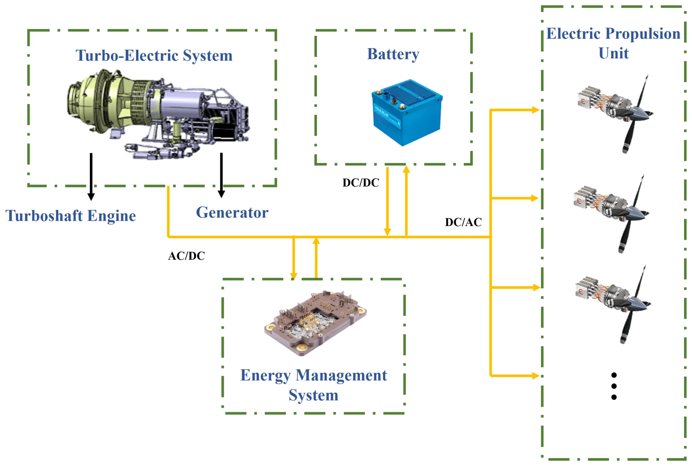
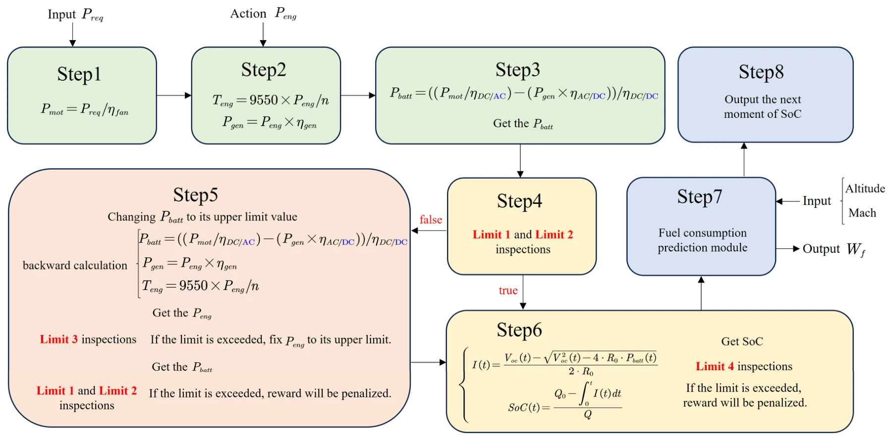
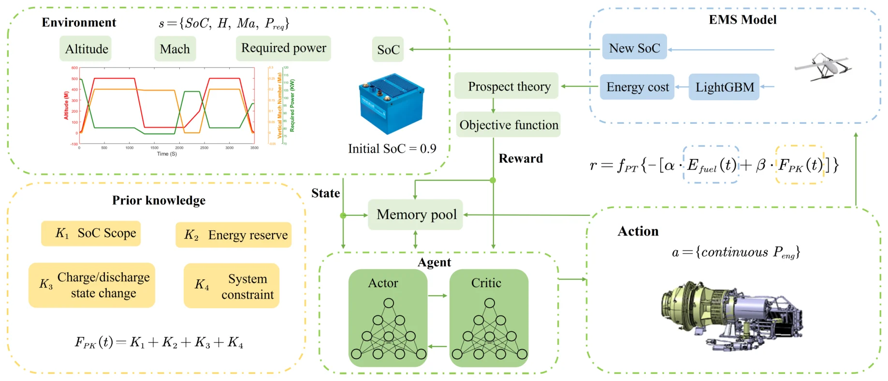
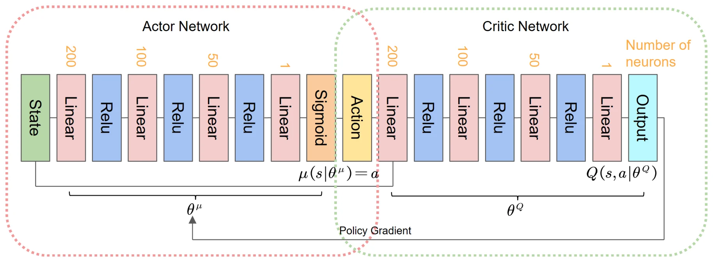

EMS-1 · Article · 2025
Deep Reinforcement Learning Based Energy Management Strategy for Vertical Take-Off and Landing Aircraft with Turbo-Electric Hybrid Propulsion System
涡轮电混动垂直起降飞行器的深度强化学习能量管理（中文意译）
† These authors contributed equally to this work. * Corresponding authors.
Aerospace 2025, 12, 355 Open access · CC BY 4.0
Received 24 March 2025 · Revised 14 April 2025 · Accepted 15 April 2025 · Published 17 April 2025
DOI: 10.3390/aerospace12040355 Publisher page Official PDF
Keywords deep reinforcement learning; energy management strategy; vertical take-off and landing; turbo-electric hybrid propulsion system; prior knowledge
Abstract
摘要
Due to the limitations of pure electric power endurance, turbo-electric hybrid power systems, which offer a high power-to-weight ratio, present a reliable solution for medium- and large-sized vertical take-off and landing (VTOL) aircraft. Traditional energy management strategies often fail to minimize fuel consumption across the entire flight profile while meeting power demands under varying flight conditions. To address this issue, this paper proposes a deep reinforcement learning (DRL)-based energy management strategy (EMS) specifically designed for turbo-electric hybrid propulsion systems. Firstly, the proposed strategy employs a Prior Knowledge-Guided Deep Reinforcement Learning (PKGDRL) method, which integrates domain-specific knowledge into the Deep Deterministic Policy Gradient (DDPG) algorithm to improve learning efficiency and enhance fuel economy. Then, by narrowing the exploration space, the PKGDRL method accelerates convergence and achieves superior fuel and energy efficiency. Simulation results show that PKGDRL has a strong generalization capability in all operating conditions, with a fuel economy difference of only 1.6% from the offline benchmark of the optimization algorithm, and in addition, the PKG module enables the DRL method to achieve a huge improvement in terms of fuel economy and convergence rate. In particular, the prospect theory (PT) in the PKG module improves fuel economy by 0.81%. Future research will explore the application of PKGDRL in the direction of real-time total power prediction and adaptive energy management under complex operating conditions to enhance the generalization capability of EMS.
Overview
简要介绍
纯电推进受续航限制，涡轮电混合动力具有较高的功重比，是中大型垂直起降飞行器的可行方案。但传统能量管理策略很难在满足各飞行阶段功率需求的同时，使全剖面燃油消耗最小。
论文以 500 kg 级涡轮电混动 VTOL 为对象，建立了包含涡轴发动机–发电机、电池和电力电子变换器的系统模型，并用 LightGBM 构建实时油耗预测模块（原文表 3 中 RMSE 最低）。在此基础上提出先验知识引导的深度强化学习（PKGDRL）能量管理策略：以 DDPG 为基础，把 SoC 范围、能量储备、充放电状态切换和系统约束四类先验知识（PK1–PK4），以及前景理论（PT）引入奖励设计，缩小探索空间、加快收敛。
论文在完整飞行剖面上与规则策略和动态规划（DP）比较，通过消融实验检验各先验项与前景理论的作用，并在不同初始 SoC 和不同巡航时长的飞行剖面下检验策略的泛化性与鲁棒性。
Figures
混动构型与模型图
本页只展示混动构型图和模型框图，不展示实验结果图表；完整内容见正式出版论文（DOI: 10.3390/aerospace12040355）。图片截取自已发表论文，图题保留原文英文，下附简短中文说明，点击可查看原图。
混动构型

Figure 2. Ideal power source for distributed electric aircraft: turbo-electric hybrid propulsion system.
涡轮电混合推进系统组成：涡轴发动机–发电机、电池、能量管理系统与分布式电推进单元。
Reproduced from Yu, F.; Tang, W.; Chen, J.; Wang, J.; Sun, X.; Chen, X. Aerospace 2025, 12, 355. https://doi.org/10.3390/aerospace12040355. © 2025 by the authors, CC BY 4.0.
系统与方法模型

Figure 6. Flowchart of model operation.
模型运行流程，包括功率分配与各项限制条件的检查。
Reproduced from Yu, F.; Tang, W.; Chen, J.; Wang, J.; Sun, X.; Chen, X. Aerospace 2025, 12, 355. https://doi.org/10.3390/aerospace12040355. © 2025 by the authors, CC BY 4.0.

Figure 7. Agent–environment interaction for hVTOL energy management.
智能体–环境交互：状态、先验知识（K1–K4）、前景理论与奖励函数的组织方式。
Reproduced from Yu, F.; Tang, W.; Chen, J.; Wang, J.; Sun, X.; Chen, X. Aerospace 2025, 12, 355. https://doi.org/10.3390/aerospace12040355. © 2025 by the authors, CC BY 4.0.

Figure 8. The architecture of the actor–critic network.
Actor–Critic 网络结构。
Reproduced from Yu, F.; Tang, W.; Chen, J.; Wang, J.; Sun, X.; Chen, X. Aerospace 2025, 12, 355. https://doi.org/10.3390/aerospace12040355. © 2025 by the authors, CC BY 4.0.
Reported Results
论文中报告的主要结果
- 燃油消耗：PKG-DDPG 50.662 kg，规则策略 53.651 kg，DP 49.832 kg（原文表 6）；论文报告其燃油经济性与离线 DP 基准仅差 1.6%。
- 前景理论（PT）使燃油经济性提高 0.81%：有 PT 时 50.662 kg，无 PT 时 51.072 kg（原文表 7）。
- 消融实验中，去掉任一先验项（PK1–PK4），DDPG 都无法得到有效解（原文表 7）。
- 油耗预测模块中，LightGBM 的 RMSE 为 0.027041，在五种方法中最低（原文表 3）。
- 在不同初始 SoC（0.85–0.95）和三种飞行剖面下，SoC 曲线形态保持稳定一致（原文图 18、图 19）。
Citation & Rights
引用与版权
Yu, F.; Tang, W.; Chen, J.; Wang, J.; Sun, X.; Chen, X. Aerospace 2025, 12, 355. Deep Reinforcement Learning Based Energy Management Strategy for Vertical Take-Off and Landing Aircraft with Turbo-Electric Hybrid Propulsion System. https://doi.org/10.3390/aerospace12040355
本文为 MDPI 开放获取论文，采用 CC BY 4.0 许可；本页图片依该许可注明出处后转载，全文请见期刊官方页面。本页数字均来自原论文，是对已发表结果的展示，不是新的实验或比较。
本页仅展示混动构型图和模型框图（图 2, 6, 7, 8），不收录实验结果图表；实验结果、表格及完整内容请见 正式出版论文。